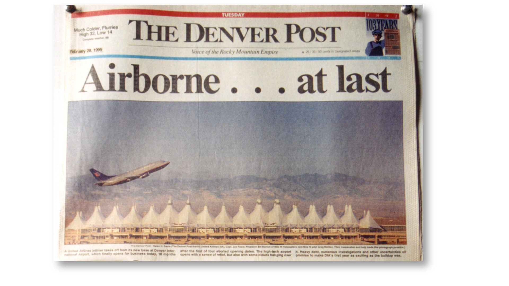
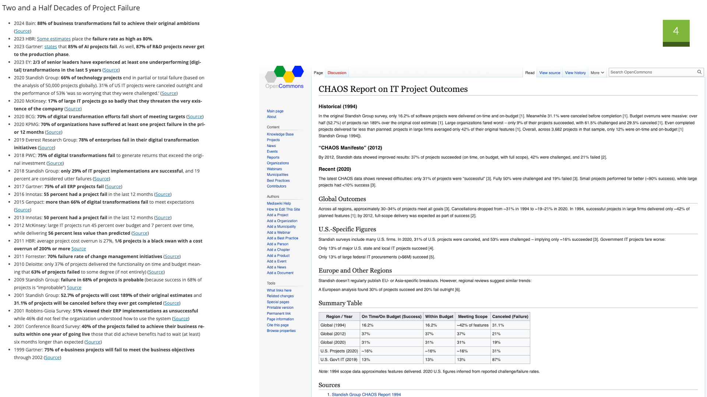
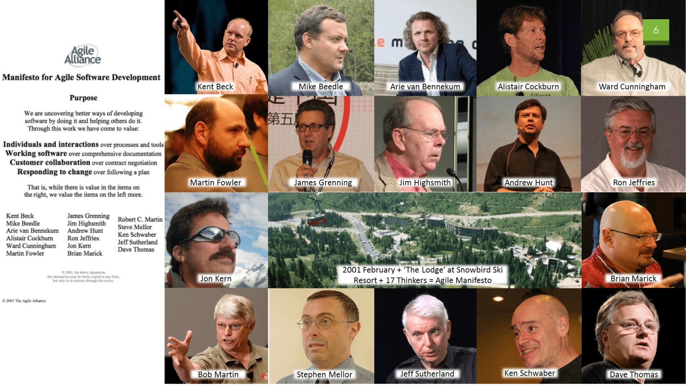
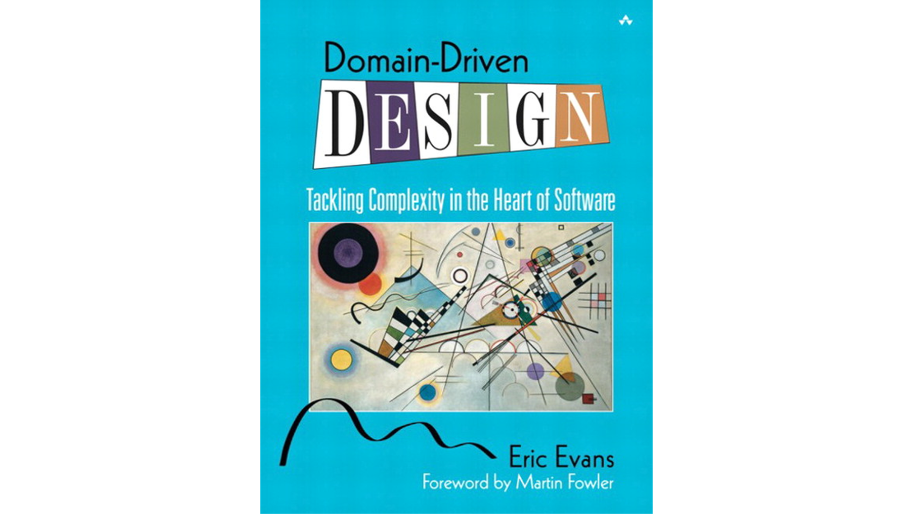
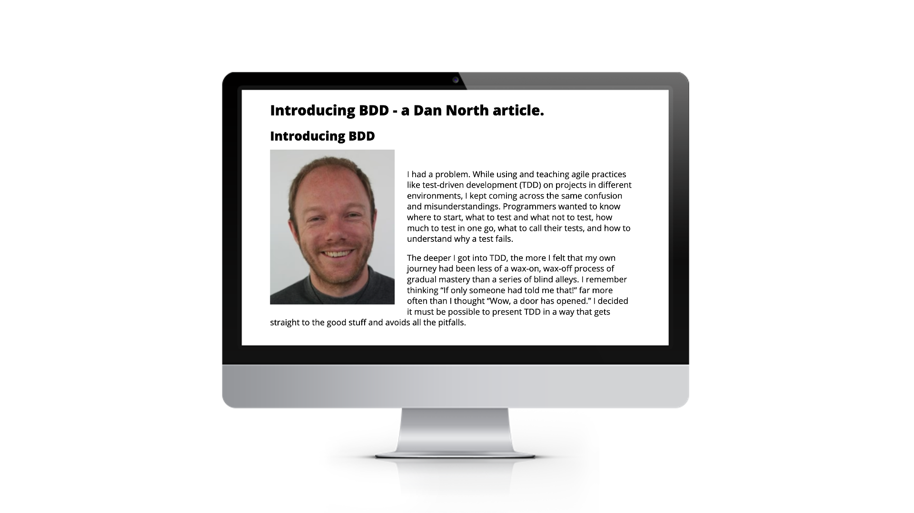
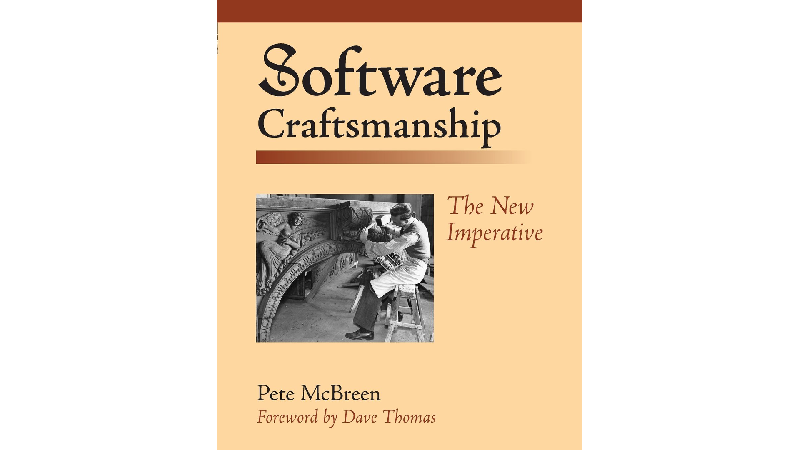
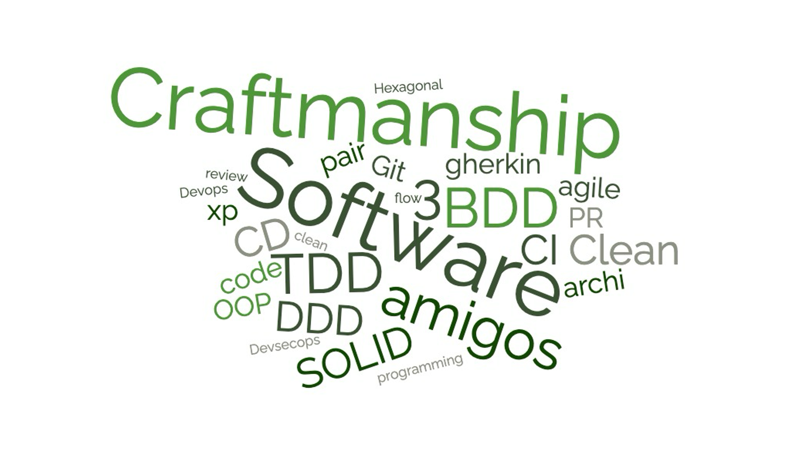
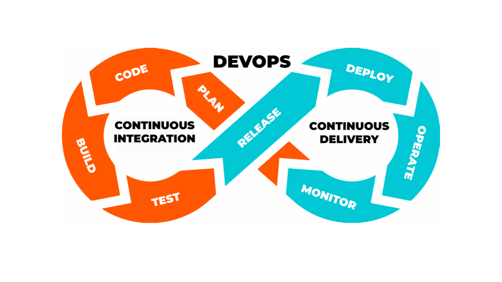
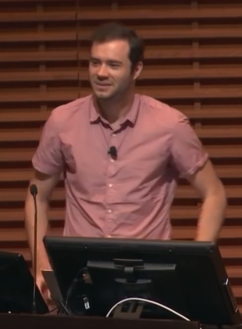

Ingénierie
logicielle à l'ère
des agents
Comprendre et s'équiper
Benoît
Fontaine
Staff Engineer
Échanger avec
une équipe de dev
Créer un outil
ponctuel avec l'IA
En connaître
les limites
et s'équiper
lancer le projet
données, RGPD
AI Act
périmètre
2 jours · 8 semaines · 2 jours · 12 jours
selon votre abonnement
avec votre adresse universitaire
Connaissances théoriques sur les bases du génie logiciel et de l'IA agentique
Avoir un poste opérationnel pour démarrer un projet
L'agent écrit le code.
Que reste-t-il à maîtriser ?
Plus rien
Autre chose
Plus encore
D'où vient
le craft ?

mois de retard
Aéroport de Denver.
Un logiciel de bagages.
« Software engineering »
Garmisch · OTAN

Pas de
balle d'argent
l'outil mange l'accidentel, jamais l'essentiel
Dette
technique
 Kent BeckXP · TDD
Kent BeckXP · TDD
2001signataires
Snowbird · Utah

Le code parle
la langue du métier
Eric Evans · préface de Martin Fowler

Décrire le
comportement
Scénario : jet égal au DD Soit un degré de difficulté de 12 Quand le total du jet est 12 Alors c'est une réussite
Dan North · lisible par le métier, exécutable comme un test

Pas seulement…
mais aussi


du temps à
écrire du code
Microsoft Research 2019, cité par Mancuso
Le craft face
aux agents


L'agent génère et exécute.
$ agent "fais-moi une appli" ✓ terminé // code lu : 0 ligne // tests : aucun
$ agent --tdd --tidy ● rouge ● vert ● refactor // code lu : oui // tests : d'abord
Beckjuin 2025Boucles
Fonctions
non demandées
Triche
sur les tests
L'IA
amplifie.
« Un trou plus profond,
plus vite. »
Dave Farley
Où va la qualité
du code ?
de temps
de temps
gain médian,
pas 60 %
Stanford · ~120 000 devsComplexité
CMU · 806 dépôts
Stabilité
par +25 % d'IA
Refactoring
GitClear
Failles
Veracode
La qualité se propage
Le désordre aussi
de risque de défaut, au minimum
CodeScene · pairsMancuso
revue humaineMartin
gauntletBooch
angles mortshumains
agents
sain · modulaire nommé · testé
Le code
est jetable ?
spec.md ──▶ code (régénérable)
Non-déterminisme
La spec devient du code
Re-vérifier à chaque fois
Tessl · « Software 3.0 » · non démontré en production
Qui mesure,
et que vend-il ?
Corrélation
ou cause ?
Sur quel
contexte ?
Aucune étude sur 3 ans de bases de code écrites avec l'IA.
La qualité,
facteur limitant
de l'agent.
Plus rien
jetable seulement
Autre chose
jugement, tests, revue
Plus encore
sur l'existant
PR = petits pas + tests d'abord + je sais l'expliquer
Quelques notions
de code, TDD et BDD
jet = 11 # variable def ajouter(jet, bonus): # fonction return jet + bonus if total >= dd: # condition print("Réussite") else: print("Échec") for quete in quetes: # boucle print(quete)
final jet = 11; // variable int ajouter(int jet, int bonus) { // fonction return jet + bonus; } if (total >= dd) { // condition print('Réussite'); } else { print('Échec'); } for (final quete in quetes) { // boucle print(quete); }
Rouge
j'écris le test d'abord
test('échec : 11 < 12', () { expect(estReussite(11, 12), isFalse); });
Expected: false Actual: <true>
Vert
le code le plus simple qui passe
bool estReussite(int total, int dd) { return total >= dd; }
+2: All tests passed!Refactor
je nettoie, les tests me protègent
const cas = [ (12, 12, true), (11, 12, false), ];
+2: All tests passed!Feature: Page d'accueil Scenario: Affichage du titre Given l'application est lancée Then je vois le titre {'CityScope'}
Le scénario décrit ce que voit l'utilisateur.
testWidgets('Affichage du titre', (t) async { await lapplicationEstLancee(t); await jeVoisLeTitre(t, 'CityScope'); });
expect(find.text(param1), findsOneWidget);Rien de mieux qu'un scénario Gherkin
comme spec pour une IA.
Les modèles d'IA
SLM
petit modèle de langage
LLM
grand modèle de langage
Généralistes
Spécialisés code
Raisonnement
Multimodaux
texte · image · son
Réfléchir plus
coûte plus.
Dans le cloud
vos données partent
Sur votre poste
vos données restent
L'agent et son
environnement
Simon Willison2025 – 2026La fenêtre est
limitée.
CLAUDE.md
Court. Précis. Lu à chaque session.
# Mon projet - Tests : flutter test - Flutter 3.x, code dans lib/ - Clean Architecture (domain, data, presentation) - Un test avant chaque fonction - Jamais de données réelles - Jamais de clé dans le dépôt
Ne réécrivez pas
sans cesse
le début.
durée de vie du cache selon l'offre
La spécification
d'abord.
La spec devient le document de référence.
GitHub spec-kit
outil open source
BMAD
agents + workflows
AI-DLC
méthode d'AWS
Pas de méthode prouvée. Reprise en pratique à la séance 2.
Agent = modèle + harnais
Harnais
règles · outils · tests
Contexte
limité, à soigner
Cache
stable = moins cher
Spec
l'intention d'abord
Le projet : Flutter
Clean Architecture
domain · data · presentation
Injection de dépendances
get_it
flutter_bloc
l'état de l'écran
TDD
le test d'abord
BDD
scénarios en français
drift
base SQLite versionnée
CI/CD dans
le cloud
À chaque modification, une machine contrôle automatiquement.
Si c'est vert, le logiciel est publié. Sans clic.
Pipeline
la chaîne d'étapes
Runner
la machine qui exécute
Workflow
le fichier qui décrit
Artefact
le fichier produit
Build web
le logiciel emballé
Environnement
test, production
name: ci on: [push, pull_request] jobs: tests: runs-on: ubuntu-latest steps: - uses: actions/checkout@v4 - uses: subosito/flutter-action@v2 - run: flutter pub get - run: flutter analyze - run: flutter test
Les tests passent
Un test échoue
RGPD
et AI Act
Protéger les données personnelles
On ne traite que le nécessaire, pour un but précis, et la personne garde ses droits.
Encadrer l'IA selon le risque
Plus un usage touche aux personnes, plus les obligations sont lourdes.
Aucune donnée personnelle ou confidentielle dans un prompt ni un dépôt public
Des données fictives ou générées
Aucune clé ni mot de passe : .env hors dépôt
Ne collecter que le nécessaire, avec une date de suppression
Dire quand on parle à une IA ou quand un contenu est généré
Un humain relit et décide : validation du RSSI avant tout usage réel
Git au clavier
commit · branche · PR · conflit
Configurer Claude Code
CLAUDE.md · permissions · hooks · skills
Lancer le projet
dépôt d'équipe · PROJET.md · première PR